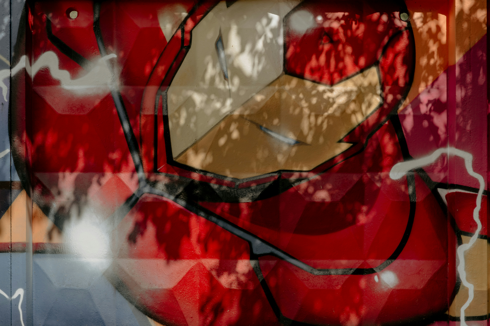
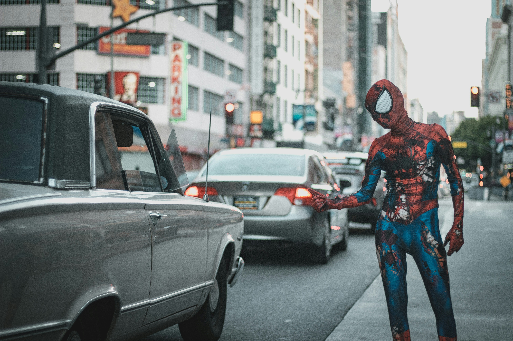
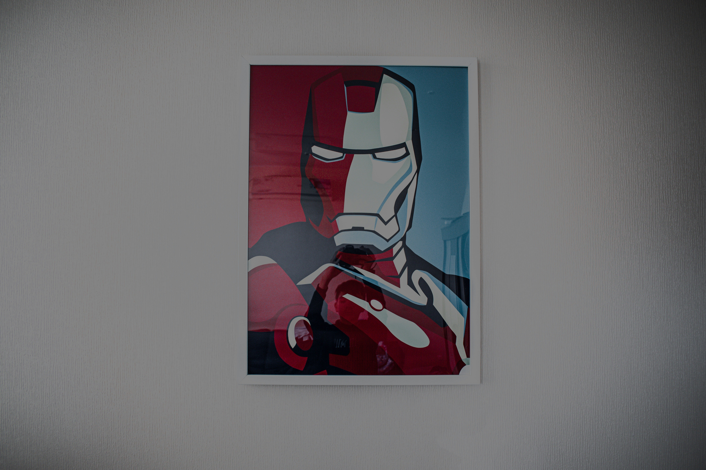

-

MARVEL
Captain
Captain America, a character by Joe Simon and Jack Kirby, first appeared in 1941, representing American ideals like freedom, justice, and courage. Steve Rogers, initially frail, transforms into a super-soldier, fighting evil with his iconic shield. A leader among heroes, Captain America's stories explore themes of patriotism, individual liberty versus collective security, and moral integrity. Through comics, films, and cultural presence, he inspires both within his universe and in the real world, serving as a symbol of resilience, hope, and unwavering commitment to righteousness.
-

DC
Batman Logo
The Batman logo, one of the most iconic symbols in popular culture, represents Gotham City's vigilante superhero, Batman. Featuring a stylized bat silhouette against a yellow oval or simply as a dark bat outline, it has undergone numerous iterations since its debut in 1939. This emblem embodies the darkness, mystery, and fear that Batman instills in the hearts of criminals. Beyond its menacing allure, the logo symbolizes justice, resilience, and the fight against orruption. It's not just a symbol for the character but a beacon for hope and a call to action for those seeking justice in the face of adversity.
-

DC
Bat Signal
The Bat-Signal is a distress signal device appearing in the Batman comics, symbolizing Gotham City's call for help to its dark protector. This iconic beacon projects the silhouette of a bat against the night sky, summoning Batman to combat crime and injustice. Its use reflects the deep bond between Batman and the Gotham City Police Department, particularly Commissioner Gordon. More than a mere call to action, the Bat-Signal serves as a warning to criminals and a symbol of hope for the citizens, embodying the ever-vigilant watch of the Caped Crusader.
-
DC
Batman Lego
Batman, Gotham City's enigmatic guardian, is a formidable force of vigilance and retribution. Trained to physical and intellectual perfection, he employs an arsenal of technology, martial arts, and psychological warfare to instill fear in the hearts of criminals. His presence alone evokes dread, making him a legendary figure in the criminal underworld. Batman's relentless pursuit of justice, coupled with his strategic mind and indomitable will, makes him one of the most dangerous and feared figures in the battle against crime, embodying the dark knight that lurks in the shadows, ever ready to strike against evil.
-

MARVEL and DC
Comic Books
With great power comes great responsibility. In the darkest night, we stand as a beacon to those who fear they are alone in the universe. Together, we face the unknown, not just as warriors, but as guardians. For those who believe in a better tomorrow, we are the X-Men, the Spider-Men, the Batmen, the heralds of hope like the Silver Surfer, and the Colonial Marines standing on the front lines. We do not falter; we do not yield. We fight not for glory, but for the future of all. United, we are the shield against the darkness, the hope for the dawn that is coming.
-
MARVEL
Groot
I am Groot. I am Groot. I am Groot. I am Groot. I am Groot. I am Groot. I am Groot. I am Groot. I am Groot. I am Groot. I am Groot. I am Groot. I am Groot. I am Groot. I am Groot. I am Groot. I am Groot. I am Groot. I am Groot. I am Groot. I am Groot. I am Groot. I am Groot. I am Groot. I am Groot. I am Groot. I am Groot. I am Groot. I am Groot. I am Groot. I am Groot. I am Groot. I am Groot. I am Groot. I am Groot. I am Groot.
-

MARVEL
Iron Man
Iron Man, alias of Tony Stark, is a cornerstone of the Marvel Universe, embodying the fusion of human ingenuity and technological prowess. A genius inventor and billionaire industrialist, Stark's creation of the Iron Man suit marks his transformation from a self-centered arms dealer to a technologically empowered superhero committed to safeguarding the world. His armor, equipped with advanced weaponry and flight capabilities, alongside his sharp wit and indomitable spirit, make him a formidable ally and a charismatic leader of the Avengers. Iron Man's journey is a testament to redemption, innovation, and the relentless pursuit of justice.
-

MARVEL
Spiderboy
Spider-Man, the alter ego of Peter Parker, is a quintessential Marvel superhero known for his agility, spider-sense, and web-slinging abilities. Bitten by a radioactive spider, Parker gains extraordinary powers, including superhuman strength and the ability to cling to walls. His creation by Stan Lee and Steve Ditko in 1962 introduced a relatable hero grappling with everyday challenges and moral dilemmas. Spider-Man embodies the principle that "with great power comes great responsibility," balancing his dual life as a high school student and vigilante, inspiring countless fans with his resilience and humanity.
-

MARVEL
Iron Man Poster
Iron Man, distinct from many superheroes, is not born with innate powers or transformed by accidents. Instead, Tony Stark leverages his genius intellect and technological prowess to create the Iron Man suit, a symbol of human innovation and determination. His uniqueness lies in his reliance on intellect, engineering, and a relentless will to improve. Stark's journey from a self-absorbed industrialist to a self-made hero underscores a narrative of redemption and self-sacrifice, setting him apart as a testament to the potential of human ingenuity and moral growth.